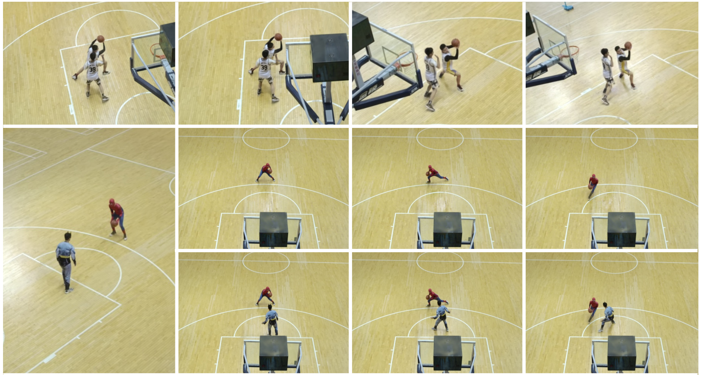
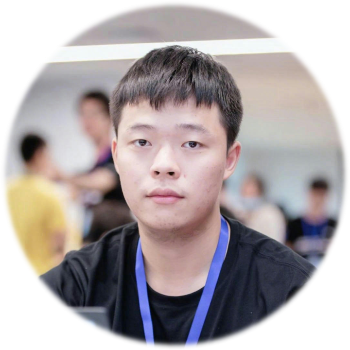
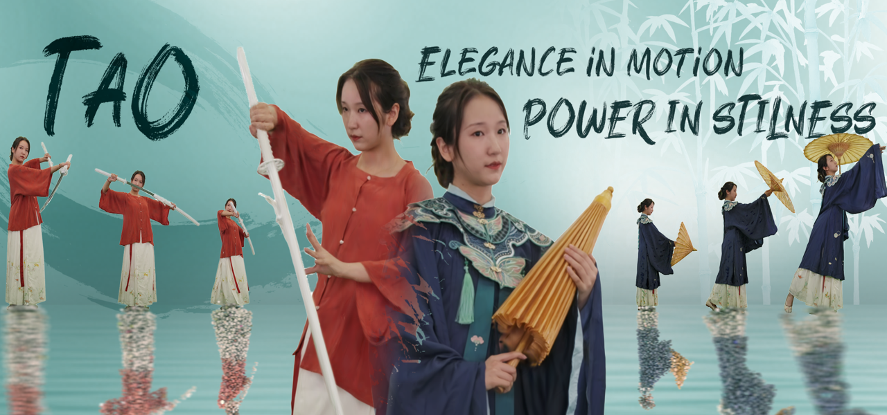
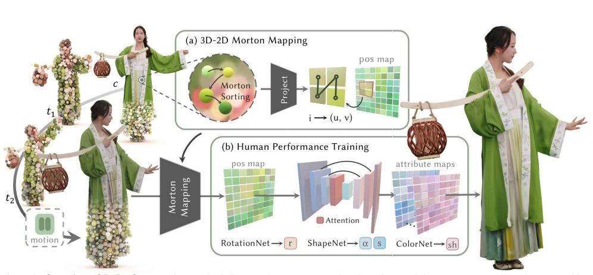
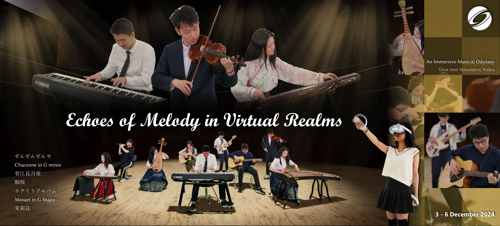
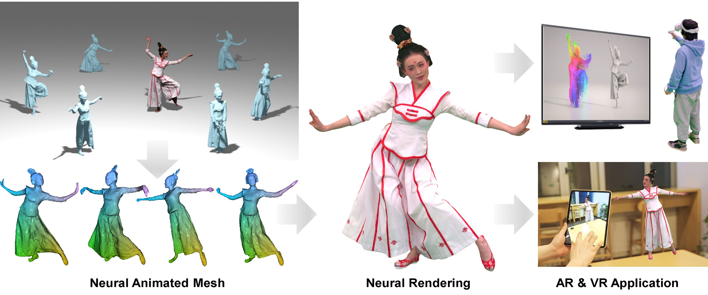
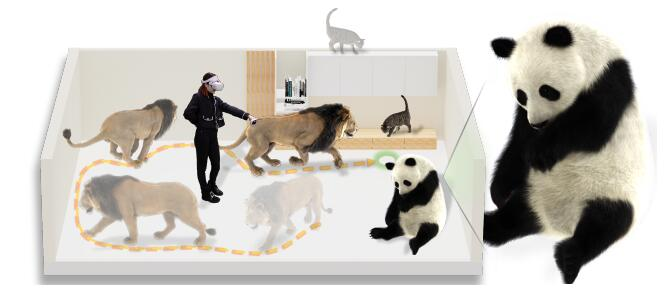
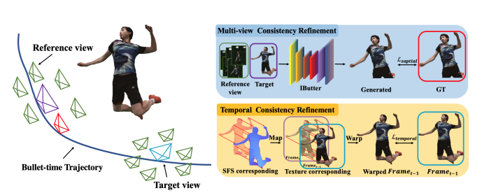
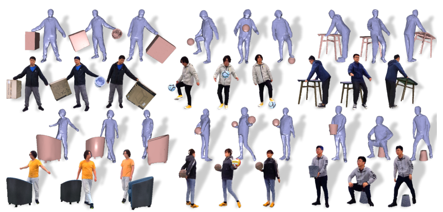

Researcher · Neural Modeling
Yuheng Jiang
I build methods for 3D reconstruction and generation, human performance capture, and volumetric video. I recently completed my Ph.D. at ShanghaiTech's VRVC Lab. I work with Prof. Lan Xu and also collaborate closely with Prof. Jingyi Yu. I was also a visiting researcher at the Max Planck Institute for Informatics with Prof. Christian Theobalt and Dr. Marc Habermann.

Computer visionGraphics
01
Publications
12 publications



SIGGRAPH Asia · 2022
Human Performance Modeling and Rendering via Neural Animated Mesh



02
Experience
Industry researchResearch Scientist Intern · Meta
Mentored by Rohan Chabra, Tomasz Malisiewicz, and Mira Slavcheva.